Adventures
Snowboarding, mountain biking, rock climbing, mountaineering — the mountains keep me grounded (and occasionally airborne).
Summiting South Sister Volcano near Bend, OR
Manar and I hiking to the summit of South Sister Volcano. We summitted via the popular Southern route followed by a fun glissade down the Eastern route snowfields. We set up camp at the beautiful Green Lakes and enjoyed a refreshing swim. One of the most stunning landscapes I've ventured through.
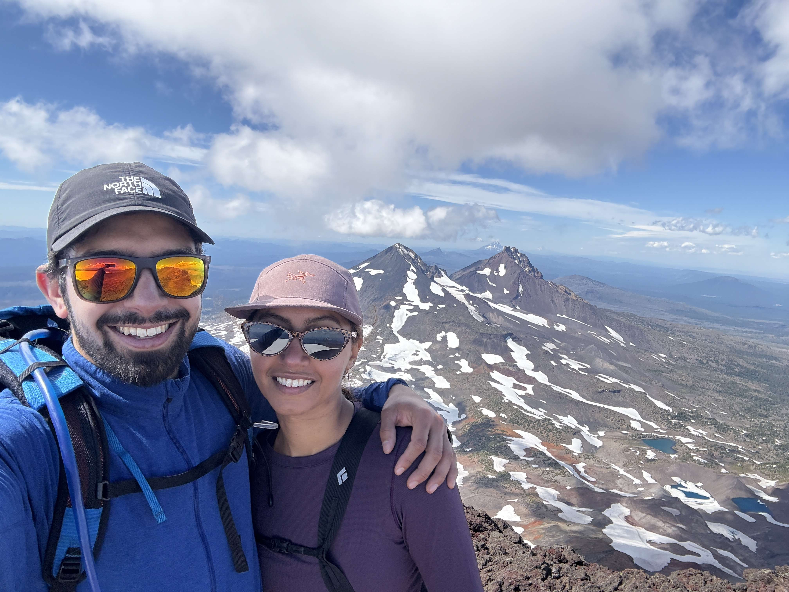
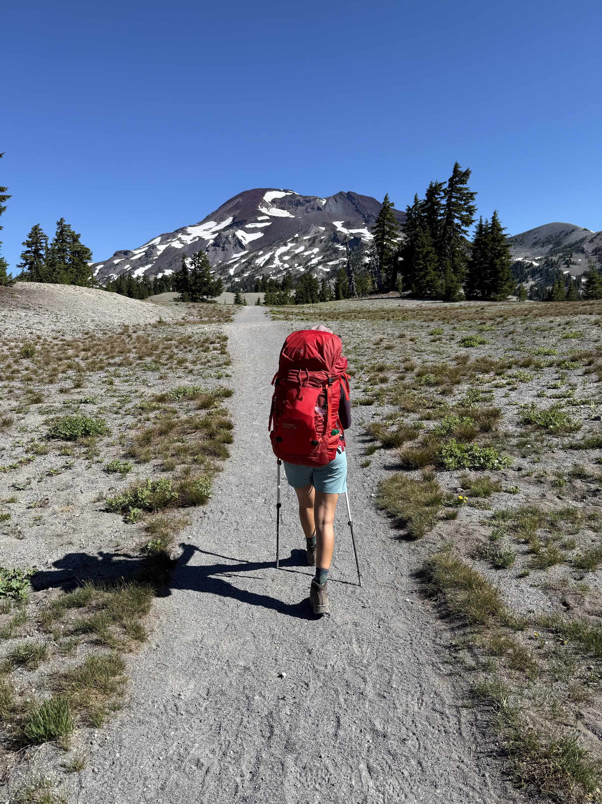
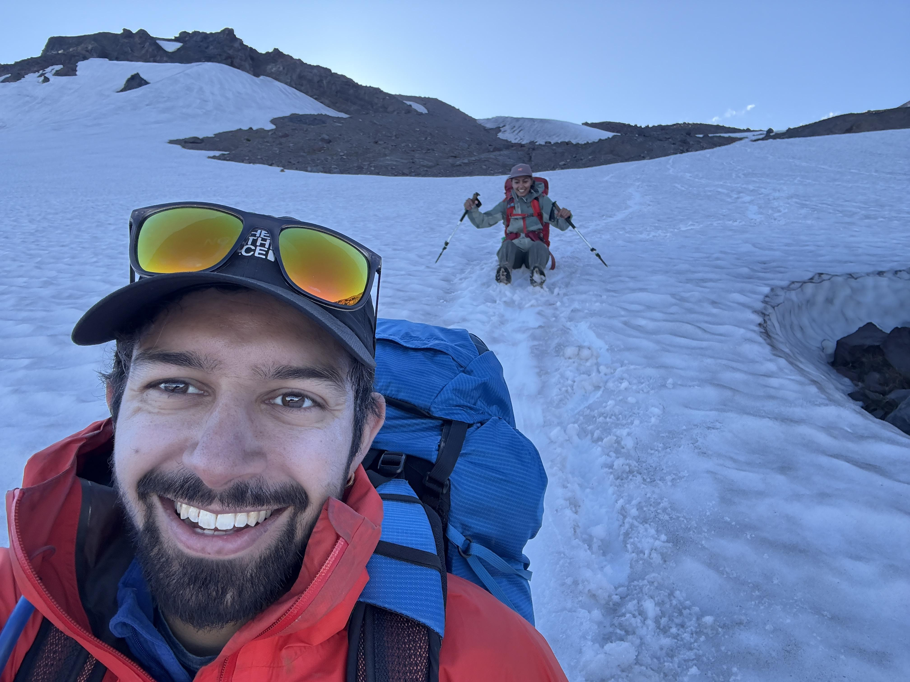
The Goat Sport Climb Route in Marble Canyon, BC
A 19-pitch 5.9 sport (bolted) climbing route with a 5.11 variant pitch in the middle. A 12-hour car-to-car journey with my partner Manar in 35° Celsius heat with insufficient water. Classic example of type 2 fun.
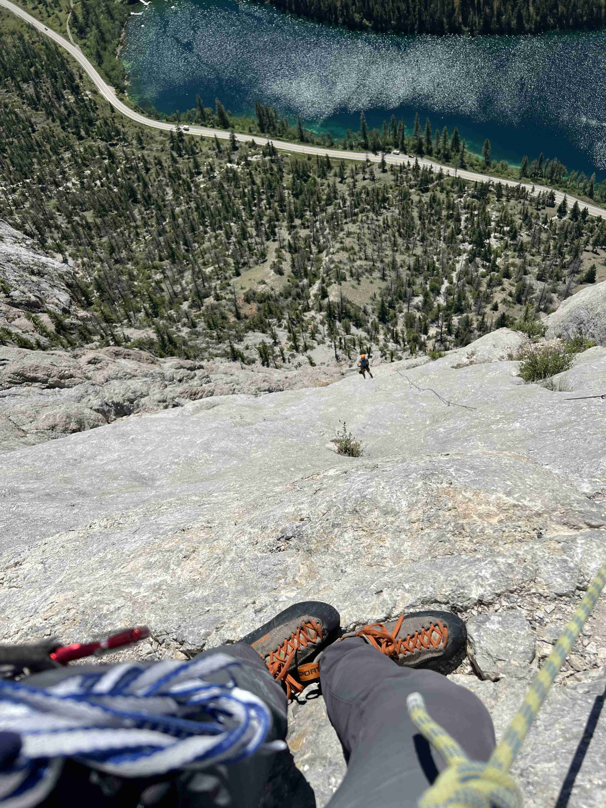
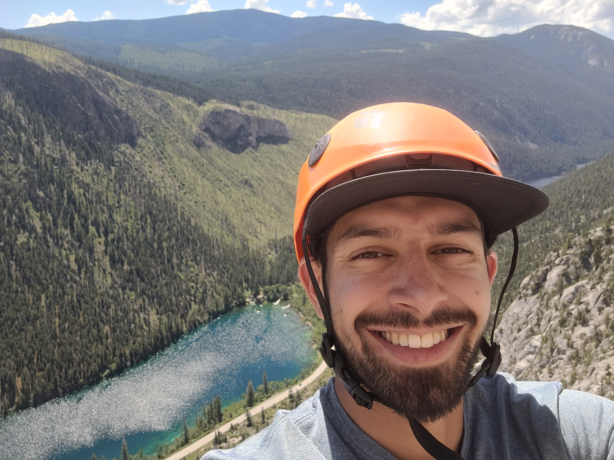
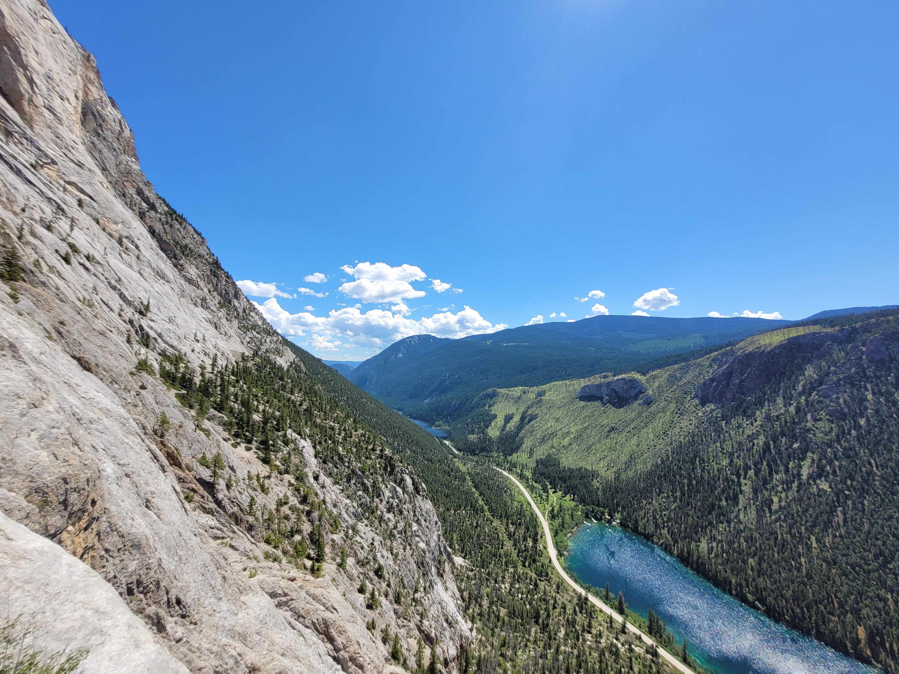
Mountain Biking the South Chilcotin Range, BC — 5 Days
A five-day bikepacking trip deep into the South Chilcotin Mountains — accessible only by float plane. Big mountains, bigger descents, and the best of times with friends.
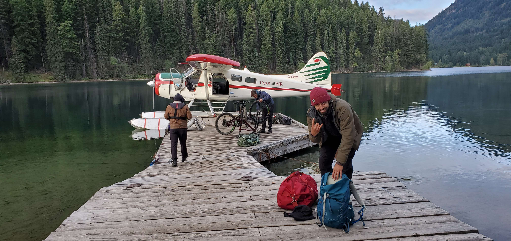
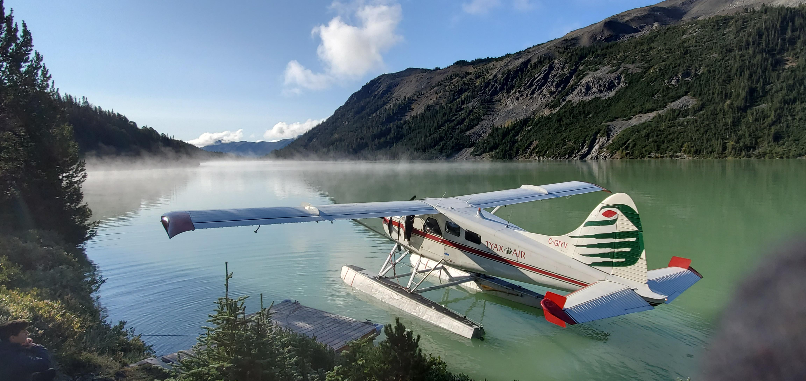
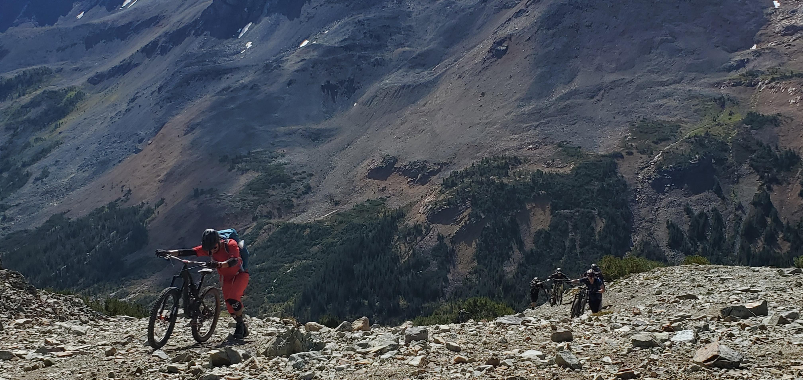
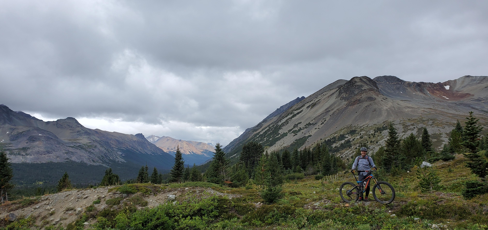
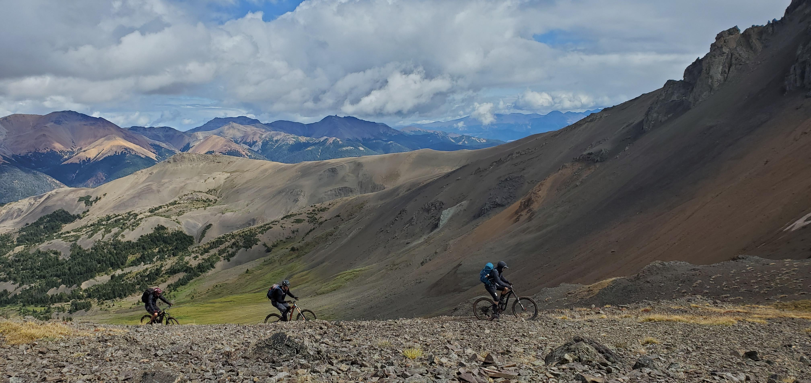
Summiting Wedge mountain and snowboarding the Northwest Couloir
Ski mountaineering with my buddy Zach to summit Wedge mountain just North of Whistler, BC. An exhausting approach and shivering cold night was the price to pay for an unforgettable summit push in hot sun followed by a ride down one of the steepest and longest couloirs of my life. A bucket list item ticked off the list.
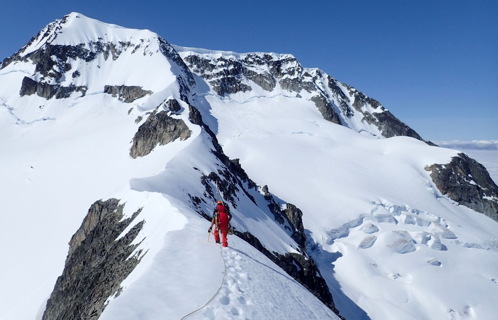
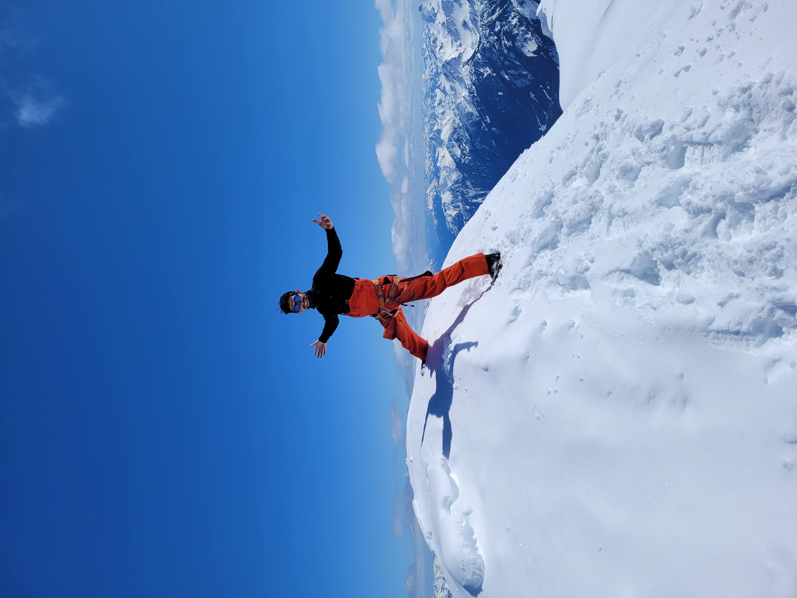
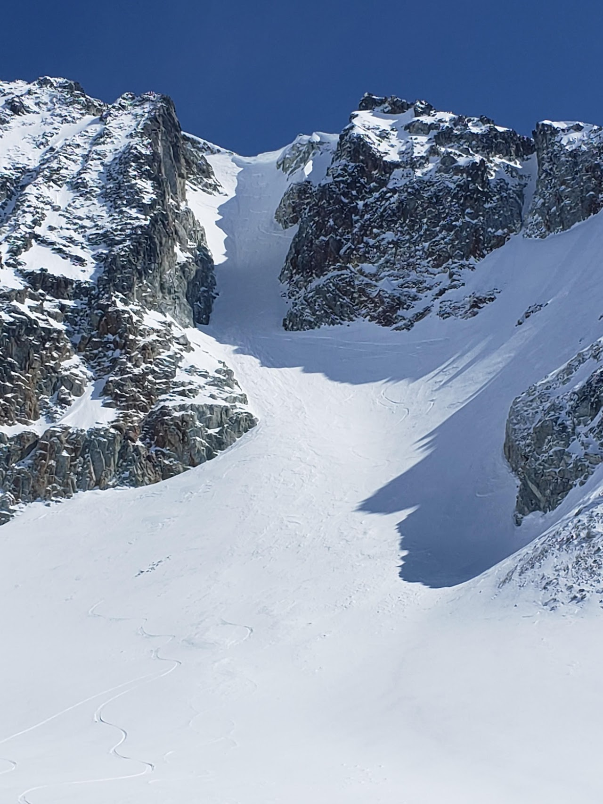